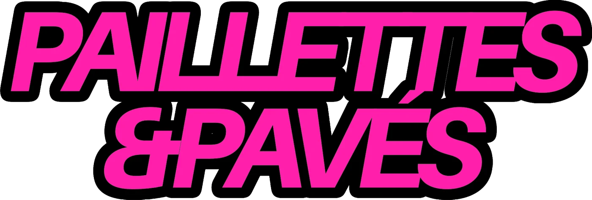

3 JEUX · 1 POUCE
ÇA VA
DÉBORDER.
Tire les ficelles. Fais tourner le micro.
Renverse le plateau.
RECORD 075 secondes · mode portrait
01 / 03RETOUR DE BÂTON
0POINTS
25SEC.
NUMÉRO 01
RETOUR
DE BÂTON
TIRE LES FICELLES×1
Préparation du castelet…